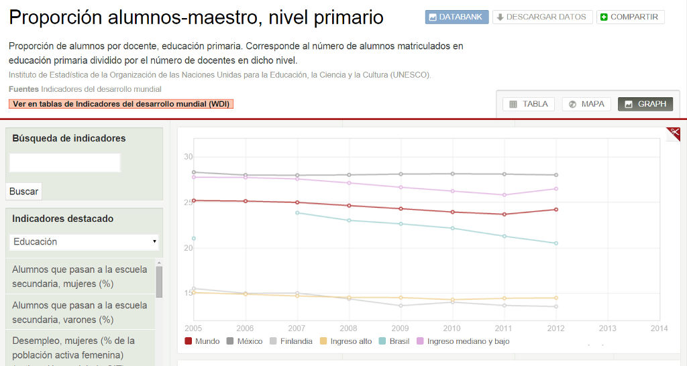

Este indicador nos muestra la cantidad de estudiantes que son atendidos por cada maestro, los datos se refieren a l@s niño@s que cursan la educación primaria (generalmente la población entre 6 y 12 años). Es un referente utilizado a nivel mundial para analizar la situación de la educación y el aprovechamiento de los estudiantes.
La premisa es: a menor cantidad de alumnos que atiende un maestro, mayor calidad. Aunque inciden factores, que analizaremos más adelante, tales como el ámbito en el que se encuentra el plantel y el tipo de sostenimiento.
Se muestran algunas estadísticas publicadas por el Banco Mundial para el ciclo 2005-2013 (lapso de 7 años para fines comparativos) en las cuales podemos observar la cantidad de alumnos que son atendidos por cada maestro en países que son referentes en el tema educativo, la cifra a nivel mundial, nuestro dato nacional, así como datos agrupados de acuerdo al nivel económico de los países, es decir, promedios de países agrupados en países de ingreso alto y países de ingreso medio y bajo.

Vínculo: Proporción alumnos-maestro, nivel primario. Banco Mundial 2013
Alumnos por docente en México y el mundo
| País | 2005 | 2012 | Variación |
|---|---|---|---|
| México | 28.3 | 28.0 | 1.0% |
| Finlandia | 15.5 | 13.6 | 12.3% |
| Corea del Sur | 27.9 | 17.9 | 35.8% |
| Mundo | 25.2 | 24.2 | 4.0% |
| Países ingreso alto | 15.1 | 14.5 | 4.0% |
| Países ingresos medios y bajos | 27.8 | 26.5 | 4.7% |
Acorde a estos datos, el indicador no ha tenido avance en el país. Ha reducido el número de alumnos por maestro un 1% en 7 años. Comparándolo con Corea del Sur, éste país en el mismo lapso de tiempo, mejoró su indicador en un 35.8% y Finlandia en 12.3%.
Si bien son países con mayores recursos invertidos para la educación, debemos de observar el comportamiento de los países agrupados como “de ingresos medios y bajos” en donde se encuentra México. Estos países han reducido su número de alumnos por maestro en 4.7%, es decir, a pesar de que la cifra de nuestro país se encuentra contemplada para la ecuación de este grupo de países, este conglomerado disminuyó casi 5 veces lo que México.
Enfocando este indicador a nivel nacional, con datos de la Secretaria de Educación Publica, podemos observar el siguiente comportamiento que respalda la fluctuación de la estadística citada por el Banco Mundial:
Alumnos por docente en Coahuila y Durango
| Estado/Región/Pais | 2006 | 2013 |
|---|---|---|
| México (nacional) | 23 | 22 |
| Coahuila | 23 | 23 |
| Durango | 19 | 19 |
Fuente: http://planeacion.sep.gob.mx/
No ha habido una disminución significativa observándolo en un lapso de 7 años.
Mejora tu Escuela, ranking de mejores escuelas de México
Mejora tu escuela es un proyecto elaborado por el Instituto Mexicano para la Competitividad en el cual, basándose en los resultados de la prueba ENLACE, genera un semáforo educativo. A continuación se muestran el ranking a nivel nacional de las escuelas que presentaron la prueba y el indicador de alumnos por maestro:
Top 10 Mejora tu Escuela en México 2013-2014
| Posición | Mantenimiento | Ubicación | Nombre | Alumnos por docente | Ámbito |
|---|---|---|---|---|---|
| 1 | Privado | DF | Niños de México | 34.280 | urbano |
| 2 | Público | Guerrero | Lázaro Cárdenas | 11.000 | rural |
| 3 | Privado | Tabasco | Atenea | 27.500 | urbano |
| 4 | Público | Chiapas | Primaria comunitaria José María Luis Mora | 19.000 | rural |
| 5 | Público | Yucatán | Benito JuárezGarcía | 24.500 | rural |
| 6 | Público | Durango | 20 de noviembre | 10.000 | rural |
| 7 | Publico | Michoacán | Fco. J. Mujica | 11.000 | rural |
| 8 | Privado | Jalisco | Gustavo A. Bequer | 8.300 | urbano |
| 9 | Público | Hidalgo | I. Zaragoza | 20.500 | rural |
| 10 | Público | Veracruz | Mi Patria es Primero | 18.000 | rural |
| Promedio de alumnos por docentes | 18.408 |
El 70% de las escuelas son de mantenimiento público, de lo cual podemos destacar el dato del indicador, es bajo. La cifra más alta la aporta la escuela de Guerrero y Michoacán, con 11 alumnos por maestro y en estas dos escuelas coincide en que es el total de alumnos matriculados en todos los grados y son atendidos por un único maestro, situación que generalmente se presenta en el ámbito rural.
El restante 30% son representadas por escuelas privadas, del ámbito urbano y, a excepción de Tabasco, son ubicadas en ciudades densamente pobladas: Distrito Federal y Guadalajara.
La escuela Niños de México, ubicada en D.F., es la que mejores resultados presentó en la prueba, y su indicador muestra 34 alumnos por maestro. La escuela Bequer de Guadalajara, fue el octavo lugar, con un número de alumnos por maestro bajo: 8.3.
Cabe destacar que en los datos que hemos analizado en el ámbito privado, el sistema educativo puede variar, por ejemplo, las escuelas con sistemas de los denominados Montessori se basan en la premisa citada al principio del artículo, “menos alumnos por maestro, mejora la educación”
El promedio que marca el indicador de las escuelas top 10 de México es de 18.4 alumnos por maestro. Ligeramente superior al que se maneja en Corea del Sur, que es de 17.9 y por encima del promedio de los países con ingresos medios y bajos que es de 26.7 en 2012, lo cual puede indicar que efectivamente a menos alumnos por maestro mejor calidad educativa.